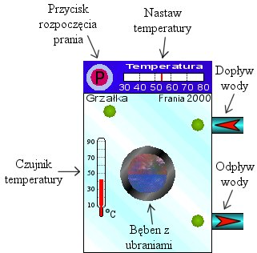

Strona tytu³owa
Opis rozkazów
Styki
Styk zwierny
Styk rozwierny
Cewki
Cewka zwierna
Cewka rozwierna
Cewka zbocze narastaj¹ce
Cewka zbocze opadaj¹ce
Cewka S
Cewka R
Liczniki
Licznik UPCTR
Licznik DNCTR
Timery
Timer ONDTR
Timer OFDT
Timer TMR
Operacje arytmetyczne
Dodawanie ADD
Odejmowanie SUB
Mno¿enie MUL
Dzielenie DIV
Reszta z dzielenia MOD
Pierwiastek SQRT
Relacje
Równy EQ
Nierówny NE
Wiêkszy GT
Wiêkszy równy GE
Mniejszy LT
Mniejszy równy LE
Zakres RANGE
Opis lekcji
Lekcja 1 Wprowadzenie
Pierwszy program
Zasada dzia³ania
Organizacja pamiêci
Obs³uga programu
Pierwsze próby
Lekcja 2 Basen
Lekcja 3 Oran¿ada
Lekcja 4 Pralka
Lekcja 5 Winda
|
|
Lekcja 4
W tej lekcji zajmiemy siê kwintesencj¹ automatyki. Bo z czym innym, jak nie z pralk¹ automatyczn¹, kojarzy nam siê od razu s³owo "automatyka" ?
Po w³¹czeniu lekcji czwartej oczom naszym ukazuje siê pralka "Frania 2000":

Nasza pralka wyposa¿ona jest w nowoczesne mechanizmy zapewniaj¹ce gruntowne pranie ubrañ. Od naszej praleczki wymagamy przede wszystkim prostoty u¿ywania. Ustawiamy ¿¹dan¹ temperaturê wody, wciskamy przycisk P i mo¿emy iœæ na kawê. Pralka powinna pobraæ wodê, ogrzaæ j¹ do ¿¹danej temperatury i zapewniæ dok³adne przep³ukanie ka¿dej plamy poprzez krêcenie bêbnem na przemian w obie strony. Po kilku chwilach pralka powinna wypuœciæ brudn¹ wodê i kilkakrotnie przep³ukaæ ubrania pobieraj¹c i wypuszczaj¹c wodê, oczywiœcie ca³y czas "miel¹c" bêbnem. Na koniec, ju¿ bez wody w bêbnie, trzeba kilka razy nim pokrêciæ, aby wycisn¹æ nadmiar wody z ubrañ. Wszystko jasne? Wiêc do roboty!
Do sterowania pralk¹ dostêpne mamy nastêpuj¹ce wejœcia i wyjœcia:
- Wejœcie pod³¹czone do przycisku P. Wciœniêcie przycisku powoduje pojawienie siê na wejœciu jedynki przez jeden cykl sterownika. Oznaczone jako PRANIE.
- Wyjœcia steruj¹ce bêbnem. Bêdnem steruje siê z wykorzystniem dwóch wyjœæ. Jedno z nich wybiera, czy bêben stoi, czy siê krêci (BÊBEN), drugie wybiera kierunek obrotów (KIER_BÊB).
- Wyjœcia steruj¹ce obiegiem wody. Za dop³yw wody odpowiada wyjœcie DOP£YW, za odp³yw - ODP£YW.
- Wyjœcie steruj¹ce grza³k¹. Oznaczone ono jest jako GRZA£KA. UWAGA! W³¹czenie grza³ki przy braku wody, lub przekroczenie temperatury 100 C koñczy siê spaleniem grza³ki.
- Wejœcie analogowe do pomiaru poziomu wody, oznaczone POZIOM. Wartoœci na wejœciu zmieniaj¹ siê w zakresie 0 - 500 jednostek, co oznacza odpowiednio brak wody i pe³en bêben.
- Wejœcia analogowe s³u¿¹ce do pomiaru temperatury. Jedno z wejœæ podaje ¿¹dan¹ nastawion¹ temperaturê (NAST_TEMP). Wartoœci na tym wejœciu zmieniaj¹ siê w zakresie 0 - 100, co odpowiada zakresowi temperatur 30 - 80. Drugie z wejœæ podaje pomiar aktualnej temperatury na czujniku temperatury (CZUJ_TEMP). Wartoœci na tym wejœciu zmieniaj¹ siê w zakresie 10 - 90, co bezpoœrednio odpowiada iloœci stopni Celsjusza. Nale¿y pamiêtaæ, ¿e wartoœæ odczytana z czujnika temperatury nie oznacza faktycznej temperatury wody, potrzeba trochê czasu, zanim czujnik "nabije" do faktycznego stanu.
Wlewana woda ma temperaturê 16 C i jedynym sposobem na sch³odzenie wody w bêbnie jest dolanie zimnej wody.
|